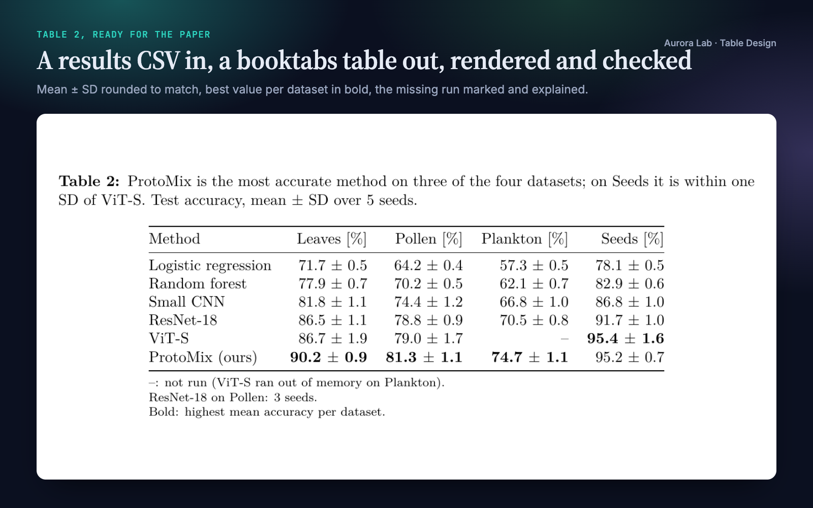
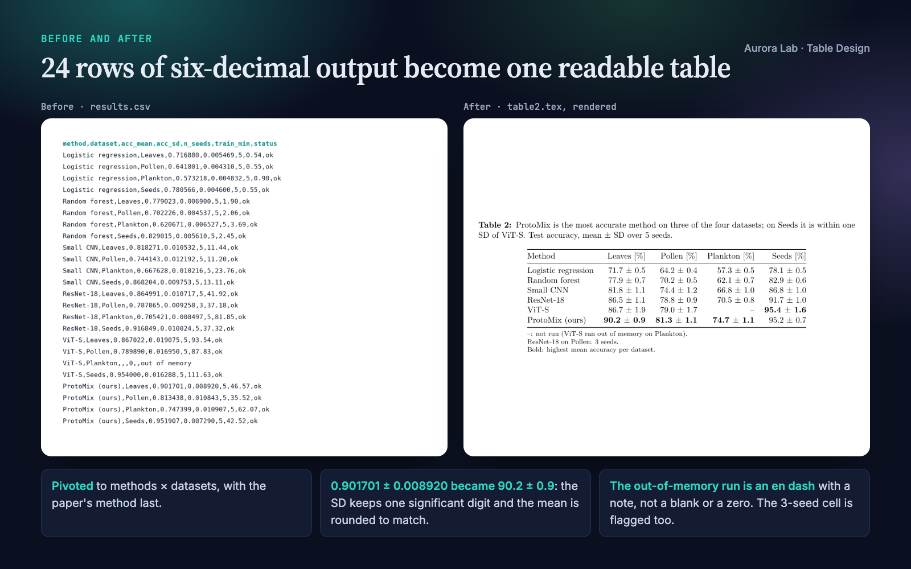
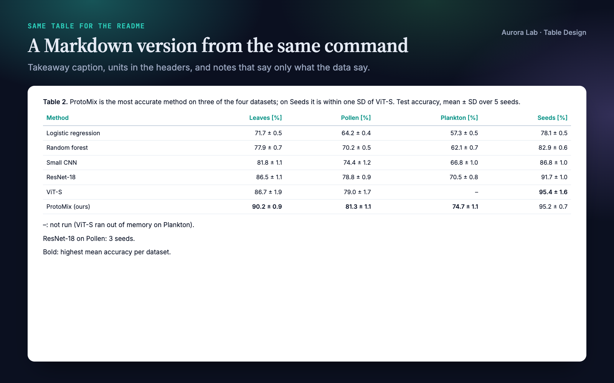
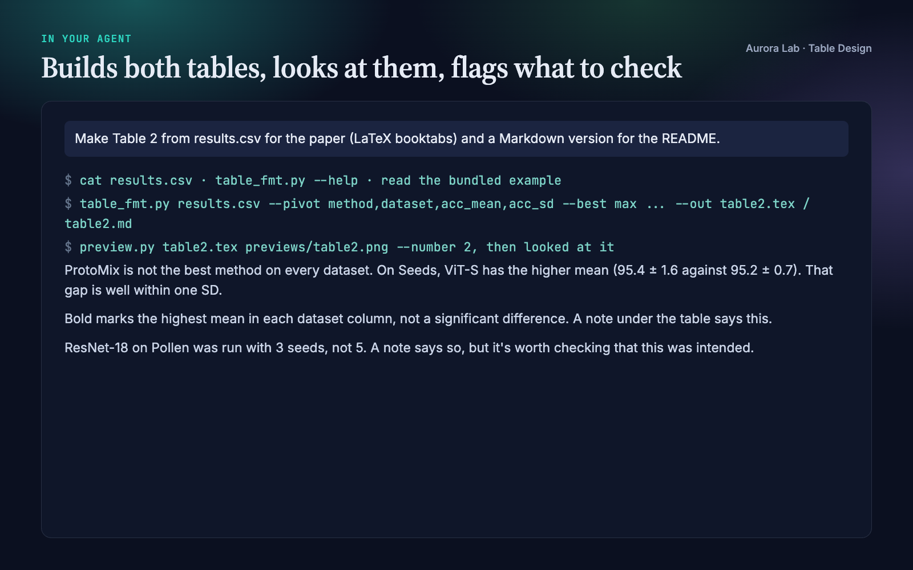

Overview
A results table is where reviewers check your claims, and six-decimal script output pasted into LaTeX makes them work for it. Table Design turns your agent into a careful table maker that:
- Decides the form first: a sentence, a figure or a table, and whether the table is for looking values up (supplementary) or for showing one comparison (main text).
- Pivots long results (one row per method × dataset) into methods as rows and datasets as columns, and orders the rows by a rule it states.
- Rounds for the reader: two to three significant digits by default; for mean ± SD, the SD keeps one significant digit (two when it starts with 1) and the mean is rounded to match. Large and tiny values are scaled, with the factor in the header.
- Marks what matters, and only that: the best value per column in bold, or one highlighted row; units in headers; digits aligned; booktabs rules and no vertical lines.
- Never hides a gap: missing runs print as an en dash with a note that says what the data say; cells with a different n are flagged; when the best value is within one SD of the runner-up, it says so.
- Renders the table and looks at it before handing it over.
It writes booktabs LaTeX for the paper, Markdown for a README and HTML for reports, and formats numbers for Spanish-language documents (decimal comma).
Other Aurora Lab skills for a paper's results: Paper Figures designs figures from data, and Figure Audit reviews figures that already exist. Each works on its own; they pair well.
Quick start
- Get the skill from Agensi and add it to your agent (Claude Code, Codex CLI, Cursor, Gemini CLI or any agent that loads SKILL.md skills).
- Have Python 3.10+. Nothing else is needed to make tables. For rendered previews: a LaTeX engine plus poppler's
pdftoppm(orpymupdf) for LaTeX tables, or Chrome, Chromium, Edge or Brave for HTML tables. - Ask in plain words.
Example requests:
- "Make Table 2 from results.csv for the paper (LaTeX booktabs) and a Markdown version for the README."
- "Clean up this table before I submit: tables/ablation.tex."
- "Turn the JSON results in research/results/ into a supplementary table, one row per experiment."
- "Format these numbers for a Spanish-language report, decimal comma."
What you get
Everything below, except the last image, comes from a real run: a fresh agent session with only this skill installed, given the request in the session card. The input was ours: a synthetic, seeded results.csv with six classifiers on four image datasets (mean and SD of accuracy over seeds, seeds per cell, training time, run status), including one run that ran out of memory, one cell with 3 seeds instead of 5, and a dataset where a baseline edges out the proposed method within noise. The run produced the LaTeX and Markdown tables and a rendered preview; it noted the missing run and the 3-seed cell under the table, and its caption does not claim a win on the dataset where the gap is within one SD. Every number in the table matches the CSV.




How it works
- Form. Sentence, figure or table? A table is for exact values or many attributes in different units.
- Purpose. A lookup table (supplementary) favours completeness and findability; a comparison table (main text) keeps only the columns its sentence needs, about seven at most.
- Shape and order. Items compared are rows, measures are columns. Long results are pivoted. Rows are ordered by the column the message is about, or by a natural order, and the rule is reported.
- Rounding. Significant-digit defaults, mean ± SD matched to the SD, scaling with the factor in the header, scientific notation for tiny values, labels such as years and IDs kept as text.
- Format. The bundled script writes the table with the caption, notes, bold and highlight.
- Caption and notes. Takeaway first, then quantity, unit, n and what ± means; notes for the missing mark, abbreviations, what bold means and any cell with a different n. Notes state only what the data say.
- Look. LaTeX is compiled and rendered to PNG, HTML is screenshotted, Markdown is read; the agent checks alignment, decimals, units, missing marks, emphasis and the caption, and re-renders after any change.
- Report. Files written, the row-order rule, the rounding, what is missing and why, what is bold and why, and any number worth a second look.
Formatting rules it applies
| Rule | Why |
|---|---|
| Three horizontal rules (booktabs), no vertical lines or boxes | Lines between cells compete with the numbers |
| Numbers right-aligned, one number of decimals per column | Digits line up, so magnitudes compare at a glance |
| Units once, in the header | Cells hold only numbers |
| Thousands separators only from five digits | 1250 stays compact; 12,500 is easier to read grouped |
| Missing cells as an en dash, explained in a note | A blank looks like an error; a zero is a different claim |
| One emphasis: best value per column or one row | When everything is bold, nothing stands out |
| Totals only for additive columns | Summed rates, means or percentages are meaningless |
Files it reads and writes
| Path | |
|---|---|
| Reads | the CSV or JSON results you name, e.g. in research/results/, or a table you want cleaned up |
| Writes | research/tables/<name>.tex, .md or .html when a research/ folder exists, otherwise next to the data or where you say |
| Previews | PNG (and PDF for LaTeX) in a previews/ folder next to the tables |
Your data files are never modified.
Command line and helper API
python table-design/scripts/table_fmt.py results.csv --pivot method,dataset,acc_mean,acc_sd \
--scale '*=1e-2' --units '*=%' --best max --rename method=Method \
--caption "Takeaway. What is shown, n, what ± means." --note "–: not run." --out table2.tex
python table-design/scripts/preview.py table2.tex previews/table2.png --number 2
| Option | Purpose |
|---|---|
--pivot ROW,COL,VALUE[,SD] |
Long to wide (methods × datasets), with mean ± SD cells |
--pm MEAN=SD |
Mean ± SD for data that are already wide |
--sig, --decimals, --scale, --sci, --raw |
Rounding, fixed decimals, scaling, scientific notation, text columns |
--best max (or min), --highlight VALUE |
Bold the best value per column; emphasise one row |
--sort, --group 5, --cols, --rename, --units |
Order, grouping, column choice, labels, units |
--caption, --note, --name, --label, --missing |
Caption, notes, Markdown/HTML caption prefix, LaTeX label, missing mark |
--pct, --total, --bar |
Share of total, total row, inline bars |
--decimal ,, --thousands, --in-decimal , |
Decimal comma and thousands separator, for output and input |
preview.py renders a .tex table (pdflatex, xelatex, lualatex or tectonic, then pdftoppm or pymupdf; --textwidth, --number) or an .html table (Chrome, Chromium, Edge or Brave, found on macOS, Linux and Windows; --chrome PATH).
Spanish number formats
With --decimal , the table uses the decimal comma, with a narrow no-break space between thousands by default (--thousands . for a point). Input files written that way are read with --in-decimal ,, and semicolon-separated CSVs are detected automatically. The last image in the gallery is the skill's bundled example (examples/tabla1_es.md), produced by our command rather than the demo run.
FAQ
What does my data need to look like?
A CSV (comma, semicolon, tab or pipe separated) or a JSON list of records, either wide or long (one row per method × dataset, which it pivots). Empty, NA or n/a cells are treated as missing.
What do I need installed?
Python 3.10+ to make tables. For previews, a LaTeX engine plus pdftoppm or pymupdf, or a Chrome-family browser. Your paper needs \usepackage{booktabs}.
Does bold mean statistically better?
No. Bold marks the highest (or lowest) mean per column; a note says so, and the agent flags when the best value is within one SD of the next.
Can it start from raw per-seed results?
The pivot expects one row per method × dataset. The agent can average per-seed rows with a short script first, but the bundled tool does not aggregate.
Will it change my files?
No. It writes new table files and previews; your data are never modified.
Limitations
- It formats and reviews tables; it does not run experiments or test significance.
- Results must already be aggregated to one row per method × dataset for the pivot.
- LaTeX columns are plain right-aligned booktabs columns, not siunitx decimal alignment; very wide or multi-page tables need manual layout (longtable, landscape).
- Previews need a local LaTeX engine or a Chrome-family browser; without them the agent reads the table source as text.
- Caption style and table formats differ between journals; check your venue's current author guidelines.
Changelog
1.0.0 · October 2026 · First release.